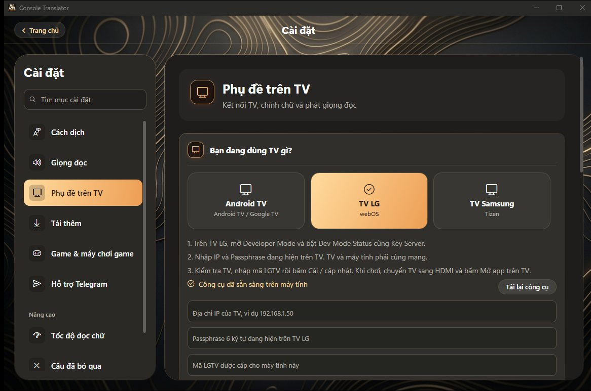

Chơi PS5 tiếng Việt trên PC: Chơi từ xa và capture card
Cập nhật ngày 3/11/2026
Trên Windows, app Console Translator có thể chơi PS5 qua Chơi từ xa ngay trong app hoặc nhận hình từ capture card, rồi hiện phụ đề tiếng Việt trên màn hình PC hoặc TV.

Yêu cầu máy
Bản PC dành cho Windows 11 hoặc Windows 10 bản 2004 trở lên, máy 64-bit. Bạn tải bộ cài ở trang Mac và PC, rồi nhận mã miễn phí như hướng dẫn trong app.
Cách 1: Chơi từ xa trong app
Ghép PS5 với app, cắm tay cầm vào máy tính rồi chơi trong app, có hình và tiếng game. Tính năng này đang thử nghiệm.

Cách 2: Capture card
Nếu PS5 đi qua capture card vào PC, chọn nguồn capture card trong app để chơi trên màn hình máy tính với phụ đề đè lên hình.
Thêm khóa AI để dịch tự nhiên hơn
Trong Cài đặt, Cách dịch, bạn có thể chọn Google Gemini và dán khóa của mình. Không chia sẻ khóa cho người khác.

Đưa phụ đề lên TV
PC cũng có thể gửi phụ đề lên TV đã cài app. Xem từng bước trong hướng dẫn bản PC.

Câu hỏi thường gặp
Bản PC có cần máy cấu hình cao không?
Hướng dẫn chỉ nêu yêu cầu hệ điều hành và máy 64-bit. Độ mượt còn phụ thuộc máy và mạng của bạn.
Dịch được game Steam, Epic không?
Có thể chọn cửa sổ game trên PC để dịch nếu game hiện phụ đề mà app đọc được.
Có cần TV không?
Không. Bạn có thể xem phụ đề ngay trên màn hình máy tính.
Xem thêm
Xem hướng dẫn cài đặt →Console Translator là dự án độc lập, không liên kết với Sony, LG hay Samsung. Tên game và nhãn hiệu thuộc về chủ sở hữu tương ứng.